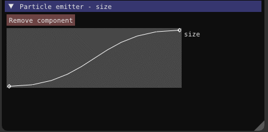

It would be nice to have Urho3D support as well. While the existing GUI works fine, it’s not nearly as powerful and mature as CEGUI is. Quite simply put, there is a lot that I would like to do with Urho3D’s existing UI implementation that I cannot do nearly as easily.
I have attempted (and failed) to rehaul the existing GUI system to be more like Ogre3D’s Gorilla GUI, however I am simply not skilled enough in this area to be getting anywhere in a decent amount of time.
Is there any interest in porting this? Is there otherwise any other good alternatives to the existing Urho3D UI?
cadaver
My personal opinion of CEGUI, having used it in a few projects, is that it’s over-engineered and too happy to throw exceptions (a bit like OGRE, at least in the past).
Thankfully it’s modular so it doesn’t mean CEGUI has to support Urho, or Urho has to support CEGUI; you would just write a CEGUI renderer for Urho in your own application, hook up all the input, and you would be ready to go.
I certainly don’t think the inbuilt UI is perfect, but 3rd party UI libraries have been discussed before and it’s a very tall order to integrate any of them to a degree (consider eg. events, resource access and scripting) that they feel “home” at Urho3D and support would be included in Urho’s repo itself. For an individual application’s needs the integration quality criteria can be as low or as high as the user requires. Of course, an external open source project doing the CEGUI integration wouldn’t be a bad idea either; it would mean people who would be satisfied with it could use it, while Urho itself would not be burdened with integration quality concerns.
rasteron
You may also want to have a look at Mike’s LibRocket Urho implementation as an alternative to the built-in UI:
It’s not fully integrated afaik but there’s a test file there to get things started…[/quote]
That’s actually really nice. I didn’t even think about HTML/CSS for UI in games, but it would actually work very well and make it much easier for my gfx artist who has a background in HTML/CSS/Javascript.
It will be useful to look into this and update it as necessary. I really want to get Render-to-texture working, but I haven’t even begun to figure out how to do that in Urho3D.
EDIT: There were some errors when I tried to build urho3d-librocket with my project. I was able to fix them and compile it successfully. However I’m not able to get it to work. Even with the demo that came with it, I can only get Urho3D’s UI to display but rocket will not.
EDIT: It turns out that I was setting up the shaders wrong. I was finally able to get it working properly (mostly):
This mostly works. Some properties are acting weird, such that I cannot set the text color and I need to manually add a after the
to get the text spaced correct.
EDIT: Looks like I solved it. Everything is working fine now! No input manager came with urho3d-librocket so I will be adding it in. The plan is that I will make the wrapper classes Urho3D Objects so that they can be managed as subsystems. That way there will be less work integrating it into existing projects, and it will be easy for users to swap them (ie a new RocketInputManager if the user is handling input differently). After that, I will send a pull request to have it updated on Github. Once I have everything working that way, then I will try to tackle RTT.
Either way, I am happy to have an HTML/CSS-based GUI. The guy doing graphics for the project is pretty stoked, too.
OvermindDL1
Keep us updated. Librocket would definitely be nice to have as I highly dislike GUI’s and the person making graphics for me cannot figure out the Urho3D’s UI and binding since they know no code, however they do know HTML/CSS, so it would be nice to integrate that sometime so I can throw out my horror of my GUI creation. Behold the programmer-art/GUI!
I’ll be working on it throughout the week, and hopefully will have some updates out this weekend. I’m mainly focusing on an Urho3d-like interface much like how Urho3D wraps other third-party libraries.
Update: Everything now inherits from Urho3D::Object. Rocket::Core::ReferenceCountable works via AddReference() and RemoveReference(), which are now overriden to use Urho3D::RefCounted’s AddRef() and ReleaseRef(). The only downside is that this “fix” has to be applied to every class individually.
Enhex
Please dont include CEGUI, I spent about 1 hour using it and 40+ hours to get it to work.
thebluefish
Worry not, that’s no longer the goal
sabotage3d
Nice ! Any chance this would work on Android and IOS ?
I learned a LOT working on this, especially when dealing with the material system!
There’s still plenty of work left. I have input working for the screen-space UI, but not for the 3D UI elements. There is also a noticable horizontal line on the 3D element from the texture that I am trying to figure out. Additionally, the current method of creating each Rocket Context from the factory is really annoying and is causing some issues.
After those issues are figured out, I’ll release the addon.
Afterwards, I have a few thing I want to add or change. For example, I want to be able to “pop out” certain elements by adding a z-offset CSS tag.
libRocket supports both Android and iOS. The plugin won’t use any OS-specific techniques either, so it should be compatible but untested.
The only roadblock is that libRocket handles files on its own. I can pass in a string to the file’s path (relative or absolute) and it will find it, but it won’t support Urho3D packages for now. Since libRocket supports mobile, that won’t be a showstopper for now.
cadaver
You should be able to install a file interface to hook into Urho resource system:
Since Urho resources are in the basic case all about synchronous IO, that should be sufficient for a game that has its UI assets packaged with the installation.
Stinkfist
Maybe this libRocket discussion would deserve its own thread?
thebluefish
Any particular reason for this? It will get its own release thread, but I don’t see any good reason to have a separate thread for some questions.
Stinkfist
I just find discussion of libRocket integration in CEGUI thread a bit confusing, that’s all.
OvermindDL1
[quote=“cadaver”]You should be able to install a file interface to hook into Urho resource system:
Since Urho resources are in the basic case all about synchronous IO, that should be sufficient for a game that has its UI assets packaged with the installation.[/quote]
You can yes, I did this back in Ogre3D times and it has an interface for your own custom ‘filesystem’.
Making a node editor would be fun for Urho3D, I had an idea to make an UE4 blueprint clone which outputs a nicely formatted subclassed LogicComponent by the end of it, ready to compile or hot-reload live using runtime-compiled-C++…
hdunderscore
I’ll have to check out nanogui-- ChrisMAN mentioned it the other day but I didn’t find it when I googled.
I’ve been using nanovg/oui/blendish in one of my projects and am enjoying it. I have often thought of node editors for various urho tasks however I have too many other things on my plate, so it would be great to see someone else do it
Making a node editor would be fun for Urho3D, I had an idea to make an UE4 blueprint clone which outputs a nicely formatted subclassed LogicComponent by the end of it, ready to compile or hot-reload live using runtime-compiled-C++…[/quote]
It looks like it only supports OpenGL. Not something I’m interested in since not everyone has decent OpenGL support unfortunately.
Making a node editor would be fun for Urho3D, I had an idea to make an UE4 blueprint clone which outputs a nicely formatted subclassed LogicComponent by the end of it, ready to compile or hot-reload live using runtime-compiled-C++…[/quote]
It looks like it only supports OpenGL. Not something I’m interested in since not everyone has decent OpenGL support unfortunately.[/quote]
There is a bgfx port which makes it work with other APIs but that might be a tad excessive, as well as a stand-alone DX11 port. Porting it to Urho3D’s Graphics API would be the way to go but that would take some effort but it wouldn’t be too much of a stretch to do.
thebluefish
So the ~week’s worth of changes is gone when my work machine was wiped, which never should have happened here.
I have put the latest version I have on Github. I made some changes for things that were broken and I remembered how to fix them. It should (mostly) work with some glaring bugs, and the complete loss of my input handlers. For now, I will not be updating this until I have the patience to redo everything that I lost.
Making a node editor would be fun for Urho3D, I had an idea to make an UE4 blueprint clone which outputs a nicely formatted subclassed LogicComponent by the end of it, ready to compile or hot-reload live using runtime-compiled-C++…[/quote]
It looks like it only supports OpenGL. Not something I’m interested in since not everyone has decent OpenGL support unfortunately.[/quote]
There is a bgfx port which makes it work with other APIs but that might be a tad excessive, as well as a stand-alone DX11 port. Porting it to Urho3D’s Graphics API would be the way to go but that would take some effort but it wouldn’t be too much of a stretch to do.[/quote]
I’ll look into this. I have a more immediate need for something to integrate as an editor rather than game UI.
This library looks fine, but I would be aiming for LibRocket as this is more established and used by other engines/games. I think the guys here already got some progress with the integration.
JulyForToday
Bluefish: what ever happened to your incomplete libRocket integration? Did you move onto something else?
thebluefish
I’ve touched it a few times, added some stuff, etc… but I haven’t yet gone the long haul. The main problem is that I’m not 100% sure if libRocket meets what I need for a UI system. I originally chose it due to the fact that my UI designer works in HTML/CSS, but then he flaked out. Since then there’s not been any real motivation to keep working on it.
sabotage3d
I have tried CEGUI and Librocket, wasn’t really satisfied they have a lot of limitations, also librocket support it somwhat dead with tons of bugs and problems.
Have you considered imgui github.com/ocornut/imgui it looks like the cleanest and most up to date gui library.
JulyForToday
Hmm… I wasn’t familiar with the term IMGUI (Immediate Mode Graphical User Interface). Found this video. Watching it now.
Thing about that particular library:
[quote]Can you reskin the look of ImGui?
You can alter the look of the interface to some degree: changing colors, sizes, padding, rounding, fonts. However, as ImGui is designed and optimised to create debug tools, the amount of skinning you can apply is limited. There is only so much you can stray away from the default look and feel of the interface[/quote]
Depending on the aim of a project, that right there can be quite a deal breaker.
Of course, wherever there is a will (and source code), there is a way.
Although I’m not sure how I feel about ImGui stuffing 12,000 lines of code into a single file, but my initial reaction:
thebluefish
[quote=“sabotage3d”]I have tried CEGUI and Librocket, wasn’t really satisfied they have a lot of limitations, also librocket support it somwhat dead with tons of bugs and problems.
Have you considered imgui github.com/ocornut/imgui it looks like the cleanest and most up to date gui library.[/quote]
That’s actually what I happen to be working on right now xD
friesencr
I consider IMGUI to be unusable for games and only good for tools. I may use it for my tools as well.
JulyForToday
Were you referring to the library ImGui, or the term IMGUI?
TikariSakari
I was wondering if there are alternatives to the UI the Urho has, and bumped into this topic. The UI works, but from what I’ve tried to do, I’ve had some trouble with scaling the UI. The UI-components seem to want to “remember” their size and only mostly grow, but if you make window smaller, they do not really want to go back to the minimal size, and this is especially bad when you have nested ui-components. For now my solution has been to go through whole hierarchy of ui-elements and manually set their size to the correct one on resizing. I also think I’ve missed something but at least on the editor when making guis, I haven’t found option for padding, meaning that I have had to manually add padding to each components minimal size. I guess what I have been trying to make is something like ui-component that tries to use minimal space + padding every time the window gets resized.
[quote=“JulyForToday”]Hmm… I wasn’t familiar with the term IMGUI (Immediate Mode Graphical User Interface). Found this video. Watching it now.
[/quote]
I watched the video, and I got the feeling that this doesn’t work too well or at least without modifications with mobile devices. Since the pointer keeps jumping, instead of having to look at the previous state where the pointer was in last frame, the user might click a button that is completely other side of the screen compared to last state.
Edit: Seems that there is actually thing called layout border, that can be used in a way that it works like padding. I do wish that there would be some kind of option for “Retain min size”, so when I keep adjusting the components the window size would also shrink when it can. I do understand that this could potentially cause hick ups, if it does it every frame. Maybe having manual way of calling some method of uielement.
My current solution is something like this and it seems to work at least for my testings:
// Set all sizes to 0 from deepest first, because if child node is not 0, the parent cannot
// be set to 0. This will not shrink components when making window smaller
void UIGame::minimizeElement( Urho3D::UIElement* element ) {
for( int i = 0; i < element->GetChildren().Size(); ++i ){
if( auto tmp = dynamic_cast<Urho3D::DropDownList*>( element ) ) {
for( int j = 0; j < tmp->GetItems().Size(); ++j )
minimizeElement( tmp->GetItems()[j] );
}
minimizeElement( element->GetChildren()[i] );
}
element->SetMinSize(0,0);
element->SetSize(0,0);
}
thebluefish
FYI, I have Turbo Badger working with Urho3D now. For my editor, I’ve got some weird Frakenstein stuff going on between wxWidgets and TB.
cadaver
Nice! TurboBadger seems fairly sane and is still seeing active development. Are you doing a “wrapping” to Urho objects & events to hide the TB objects? Atomic Game Engine seems to be following that approach, which is somewhat laborious, but not impossible.
yushli
Will that integration of Turbo Badger be merged into Urho3D master branch?
sabotage3d
Have anyone tried Turbo Badger for in game UI ? Does it work on mobile ?
thebluefish
No, I simply don’t see any benefit to doing it that way. Not only does it abstract TB’s default widgets, it also makes creating new widgets tedious. It also doesn’t help that TB’s “shared pointers” and use of events makes managing objects a nightmare to deal with in Urho3D.
Instead I have a TBUI subsystem, based off the existing UI subsystem. TB’s batches are rendered out appropriately, and then it provides some helper functions for dealing with TB such as filesystem stuff. It also holds a “root” widget which is automatically resized when the Urho3D window is resized.
Beyond that, everything’s strictly TB. We can freely get the root widget and add widgets onto it. I already have a few custom widgets working along-side the ones provided by TB, and it works great.
I also love how extendable it is. For example, I wanted to add a solid border around some windows, and it took me maybe an hour to get custom skin parameters put in, and everything hooked up right.
My only gripe is that development appears to be slow. Maybe a couple times a month. It was last updated a month ago, and there’s still an open issue from 2014 that’s seen no love. Some things, like the tab control widget, simply aren’t ready for any serious commitment and will need to be fixed before they’re worth using. Still, it’s easy enough to work with to make it my UI of choice.
IMO it’s not stable enough currently to be considered for that. Additionally, it would practically need to be rewritten to properly work with Urho3D. If development of TB doesn’t seem to pick up, it just might be worth it.
In-game UI would work just fine, and there’s no reason for it to not work on mobile. Bitmaps are handled by a base class, which allows me to handle loading textures in Urho3D. Additionally, the provided batching system is implicitly compatible with Urho3D so it should work anywhere the existing UI system works.
cadaver
Thanks for the clarifications. Yes, accessing the TB objects directly is indeed the sanest way of integration for your own projects.
TikariSakari
It would be nice to see the TB working. I have spent a week now trying to force the Urhos default UI to behave like I want it to, and most likely I am doing everything wrong, since I am terrible at coding. Regardless the things that interest me are related to automatic scaling, which I think TB does? Urhos UI scales relatively well if there is only buttons with text, but some things that I had some problems are:
Scaling images on ui, since I wanted the image to retain 1:1 ratio regardless of the screen size, I had to manually code some parts of the UI. The idea was to use kind of rpg dialog thing, where on left side is image of the person, and then next to it is the dialog, which lead to another interesting problem I encountered with Urhos UI.
Text that has fixed with, but can be multi-lined with word wrap. The automatic height from this element seems to give really weird values. Not to mention setting text after giving size for the text-element, seems to put new width to the element. So when I changed the text (dialog), the same width from last text still existed, so the texts area needs to be set after changing it. Maybe setting the fixed height would solve this problem.
The biggest problem so far with the default Urhost UI components that I’ve tried to deal with has definitely been with dropdownlist. I don’t think I’ve managed to get it work correctly. It seems to cause crash when opening the dropdown then clicking the close button from the window. For example using example 2, adding dropdownlist, click on the list, so that the list would be visible, then hitting the X-button to close the program makes the program crash for me in windows 10 + vs2013. Also besides the crash bug, I couldn’t really figure out how to add items to the dropdownlist, and eventually I decided to just go with something else.
Other than those small issues, TB at least judging from the image, would have multicolored text, which is something I am interested of. Maybe the Urhos text element can also have varying colors, and I’ve just missed it, but at least it looks like this might be possible with TB.
In the end I think I got some kind of UI-layout prototype that scales according to resolution by just resizeing texts font-sizes accordingly, and everything else just magically happens, except my dialogue box needed a bit more code. This is with the default urhos ui.
thebluefish
Yup, scaling is (mostly) done automatically. Honestly, it’s a pretty dumb system. You can sorta define how a given widget scales itself when the window is resized, however the options are lacking. For example, a Window can either grow left/top, or right/bottom. That means that a centered window won’t be centered after resizing, it will be off to some side depending on how you have it setup.
However it’s not that bad. I’ve been modifying and rewriting several widgets to provide what I need. I’ve also added a few more skin attributes and widget attributes. I’ll be adding some to better handle scaling in the near future as well.
So that makes 3 independent ports now? Maybe we might be better collaborating for one good plugin. Feel free to take anything you want from my port if it helps, don’t need to adhere to my MIT license for that.
[quote] It is fast, portable, renderer agnostic and self-contained (no external dependencies).
ImGui is designed to enable fast iteration and empower programmers to create content creation tools and visualization/debug tools (as opposed to UI for the average end-user). It favors simplicity and productivity toward this goal, and thus lacks certain features normally found in more high-level libraries.
ImGui is particularly suited to integration in realtime 3D applications, fullscreen applications, embedded applications, games, or any applications on consoles platforms where operating system features are non-standard.[/quote]
No offense, but I’d appreciate we let this thread die in peace. Mind moving your Imgui release to its own thread in Code Exchange or Showcase?
Cool port though. I tried my hand at Imgui a few months ago but never really got the hang of it.
globus
Yes, it good.
I think it deserves a separate topic
I am not the author of this port and no know who is autor (svifylabs).
Can you create topic for imgui? My English is bad
It would be good to have official support IMUI in Urho3d.
It minimally modifies Urho3D source code and not a substitute for the UI (it is extension).
You can get updated version IMUI with some addons included.
Include:
Very useful addon - Text icons.
Fragment of font texture
Color picker - 2 variants
Text tool
Tabs
Small bug - when i go to other Header (edit color style) and return - bottom area rolled (as in screenshot).
Also, i not post screenshot of Pie Menu - it “horror”
And not post about Curve Editor - it was with C++11 stuffs and i miss it.
You can see it in action

In latest version of source all c++11 stuffs was replaced.
Official imgui update - Progress Bar
I think, some of addons may be included in official imgui source.
globus
Advanced look (compiled without c++11): Curve Editor
Official imgui update - Property Editor
vitej
@globus hey thanks for testing of my ImGui implementation. There is now a ImGui thread in the “Developer Talk” Section post9831.html#p9831
Did you test it on Windows or Linux ?
globus
vitej,
Thank for imgui implementation and for new thread for IMUI.
I test it on XP OpenGL MinGW


 There’s also oui+blendish to look at which uses nanovg under the hood:
There’s also oui+blendish to look at which uses nanovg under the hood:


{kind=link}
{kind=link}
{kind=link}
{kind=link}